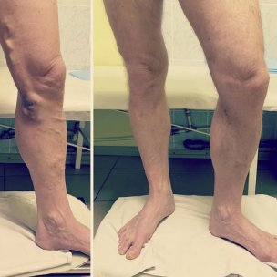

Erős az a nézet, hogy műtét nélkül és rövid időn belül nem lehet megszabadulni a visszerektől. Bár ez az állítás már a 2000-es években okafogyottá vált, sokan még mindig igaznak tartják.
A valóság azonban az, hogy a tudomány nem áll meg, különösen a flebológia (az erek szerkezetét, működését és patológiáját vizsgáló tudomány) területén. A világ egyik legújabb felfedezése egy gél, amely segít enyhíteni a visszerek tüneteit, a . A szakértők a legjobb készítményként ismerik el a visszerek megszüntetésére. Az innovatív termék segít normalizálni a vérkeringést, megelőzni a pókhálóvénák megjelenését, és 1 hónap alatt hatékony, átfogó otthoni megoldást nyújt a visszeres panaszok ellen.
A visszerek tünetei
Rendellenesen kitágult kapillárisok
Duzzadt és kidudorodó erek
Kiütés
Viszketés és nehézség a lábakban
tulajdonságai
Segít enyhíteni a duzzanatot és a fájdalmat
Segít csökkenteni a kapillárisok abnormális tágulását
Serkenti a vérkeringést
Segít kisimítani és hidratálni a bőrt
Rendszeres használat esetén a segít:
Enyhíti a fájdalmat és a duzzanatot, és helyreállítja a természetes véráramlást.
Csökkenti a fájdalmat és minimalizálja a vérrögök kialakulásának kockázatát.
Javítja az erek állapotát és helyreállítja rugalmasságukat.
A Hello Health szerkesztősége több éves flebológiai tapasztalattal rendelkező szakértőkkel készített interjút. Mindannyian ugyanazt mondták: erősen ajánlják a a pácienseiknek.
Andrew Larson, szakértő a flebológia területén (több mint 30 éves tapasztalat). A praxisomban a múltban többször volt már műtött betegem. Ez általában a visszeresség harmadik vagy negyedik szakaszában fordul elő. A gél megjelenése azonban gyökeresen megváltoztatta ezt.
Ez a csodálatos termék segíthet mind a visszérbetegség korai szakaszában, mind pedig olyan súlyos esetekben, amikor a műtét elkerülhetetlennek tűnik. Most már csak nagyon súlyos esetekben javaslom a műtétet, és azt tanácsolom, hogy először ezzel a géllel próbálják megoldani a problémát.
A kétségkívül a legjobb termék a visszerek tüneteinek otthoni megszüntetésére és a visszerek kialakulásának megelőzésére.
Itt vannak az eredmények a gél használata előtt és után 1 hónappal:
Monica Simpson, szakértő az érrendszeri egészség területén (több mint 11 éves tapasztalat). Kétségtelen, hogy a egyik erőssége az összetétele. Ez a gél egyedülálló természetes összetevőket tartalmaz, amelyek hatékonyan segítik a visszerek okainak megszüntetését.
Szeretném hangsúlyozni, hogy a gesztenye kivonatban található nagy mennyiségű flavonoidoknak, tanninoknak és vitaminoknak köszönhetően a gél javítja a hajszálerek tónusát és normalizálja a vérkeringést.
A gél használatának hatása elképesztő. Úgy vélem, hogy a egy forradalmi termék, amely gyökeresen megváltoztatja a visszerektől való megszabadulás megközelítését, és segít elkerülni a fájdalmas és költséges műtéteket. Ezt a gélt minden korosztály használhatja!
Alex Naik, vezető specialista a flebológia területén (több mint 30 éves tapasztalat). A visszeresség ellen határozottan ajánlom a használatát. Ez a gél könnyedén megbirkózik még a nehéz esetekkel is, megkönnyítve a harmadik és negyedik stádiumban lévő betegek állapotát. Segít megszüntetni a visszerek okát, nem csak a tüneteket.
Továbbá ajánlom, hogy ezt a gélt használják megelőző intézkedésként, hogy a jövőben elkerülje a visszerek kialakulását.
Számos olyan esetet láttam a praxisomban, amikor a segített a visszerek súlyos esetein. Íme egy példa:
Visszér: veszély számokban
80%A nőknél a krónikus vénás elégtelenség tünetei jelentkeznek
20%A visszerességben szenvedők veszélyes műtétre kényszerülnek
65%Fokozott a visszerek kialakulásának kockázata, különösen, ha a családban előfordult már visszérbetegség
70%Visszérbetegségben szenvedő terhes nők
90%A 8 centiméternél magasabb sarkú cipőt viselő nők hetente legalább egyszer szenvednek lábfájdalomtól
A hatékonysága számokban
100%Nincs fájdalom vagy fáradtság a lábakban
97%Megfigyelték a pókhálóerek eltűnését
96%A keringési rendszer normalizálódik
100%Nem észleltek semmilyen mellékhatást
95%Eltűntek a kidudorodó és gyulladt vénák
100%-ban hatékony termék
A gél EU tanúsítvánnyal rendelkezik, és az európai országokban való használatra engedélyezett. Már 1 hónapos használat után érezni fogja a javulást! Érdemes kipróbálni!

Mihály, 45 éves
A lábaim elkékültek, és az ereim megduzzadtak. Abbahagytam a súlyemelést, de a probléma nem múlt el. Azt mondták, hogy csak a műtét segíthet. De a gél egy hónapon belül megoldotta a problémát! A lábaim ismét visszanyerték a normális színüket.
Éva, 35 éves
Rendszeresen alkalmazom a gélt este munka után. Gyorsan enyhíti a duzzanatot és a fáradtságot, és a lábizzadás jelentősen csökkent. Reggel úgy érzem, hogy a lábam olyan, mintha új lenne. Mindenkinek ajánlom.
Júlia, 35 éves
A gél igazi megváltás számomra. Naponta használom. Már néhány hetes használat után észrevettem a kiálló erek látható csökkenését, a lábam jobban néz ki, könnyebbnek és energikusabbnak érzem magam, még esténként is.
Erika, 38 éves
Rengeteg kidudorodó véna volt a lábamon. A konzultáción azt mondták, hogy csak műtéttel lehet eltávolítani őket. De nem akartam műtétet. Nem akartam, hogy hegek és sebhelyek legyenek a lábamon. Úgy döntöttem, hogy kipróbálom a gélt, 3 hét használat után a lábam fájdalma és duzzanata eltűnt. Egy héttel később a duzzadt vénák szinte eltűntek.
Mónika, 41 éves
Sok éven át szenvedtem a térdem alatti visszerektől. A vénák folyamatosan viszkettek, néha fájtak. Tavaly észrevettem, hogy a vénák kezdtek megduzzadni. Úgy döntöttem, tennem kell valamit. Elmentem egy szakemberhez, aki azt tanácsolta, hogy próbáljam ki a t. Hihetetlen volt, de láttam a különbséget a gél használatának első hetében. A viszketés és a fájdalom szinte azonnal eltűnt. 2 hét múlva észrevettem, hogy a térd alatti vénák szinte eltűntek.
Anna, 36 éves
Nálam a terhesség után jelentkeztek a visszerek. A gyógyszertárban ajánlott krém csak ideiglenes eredményt adott nekem. A kompressziós harisnya túl szoros volt, lehetetlen volt benne járni. Hogy őszinte legyek, akkoriban majdnem feladtam, és majdnem a műtét mellett döntöttem, de véletlenül olvastam a ről, és megvettem. Meglepett az eredmény: a lábamban lévő vénás csomók szinte teljesen eltűntek. Most a lábaim olyan szépek, mint régen! Megint viselhetek rövid szoknyát!
Diána, 67 éves
Nálam a visszeresség öröklött. Egész életemben szenvedtem tőle. Fiatalkoromban ez nem nagyon zavart, de ahogy öregedtem, eléggé elfajult: az ereim égtek, mint a tűz, különösen, ha egész nap talpon voltam, vagy nehéz táskákat cipeltem. A lányom nemrég vásárolt gélt és ez megmentett engem! Soha nem gondoltam volna, hogy ilyen gyorsan megszabadulhatok egy életre szóló problémától. Az elmúlt 6 hónapban használtam ezt a gélt, és elfelejtettem a vénás problémáimat.
GYAKRAN ISMÉTELT KÉRDÉSEK
Milyen mellékhatások lehetnek? +
A gél természetes összetevőkből készül, és nem tartalmaz parabéneket, színezékeket, szintetikus illatanyagokat vagy GMO termékeket. A termék tanúsított, és nincs ellenjavallata. Nem okoz allergiát vagy mellékhatásokat.
Mennyi ideig kell használni? +
A kúra időtartama közvetlenül a visszérbetegség stádiumától függ. Általában 1,5-2 hét után a gél alkalmazásának első eredményei már észrevehetők.
Hol lehet megvásárolni? +
Mi vagyunk a krém egyetlen hivatalos forgalmazója az Európai Unióban. Ezen a weboldalon keresztül lehet megrendelni. Csak eredeti terméket vásároljon!